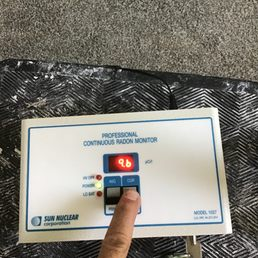

What is Radon?
Radon is a naturally occurring radioactive gas that can cause lung cancer. You can't see, smell, or taste radon, but it may be a problem in your home. Radon comes from the natural breakdown of uranium in soil, rock, and water and gets into the air you breathe.
Why You Should Test
Radon is the second leading cause of lung cancer in the United States today. Only smoking causes more lung cancer deaths. If you smoke and your home has high radon levels, your risk of lung cancer is especially high.
- Health Safety: Protecting your family from invisible carcinogens.
- Real Estate Transactions: Most buyers require a radon test as part of the home inspection process.
- Peace of Mind: Knowing that the air in your home is safe to breathe.
The Mitigation Process
If high levels of radon are detected (4.0 pCi/L or higher), mitigation is recommended. Radon mitigation is the process used to reduce radon gas concentrations in the breathing zones of occupied buildings.
A typical mitigation system involves:
- Sub-Slab Depressurization: A vent pipe system and fan which pulls radon from beneath the house and vents it to the outside.
- Sealing: Closing cracks and other openings in the foundation to make the vacuum system more efficient.
- Post-Mitigation Testing: Ensuring the system is working correctly and levels have dropped significantly.
Keep Your Family Safe
Don't wait to find out if your home has dangerous radon levels. Schedule a professional test today.
Call 970-672-7631 to Schedule